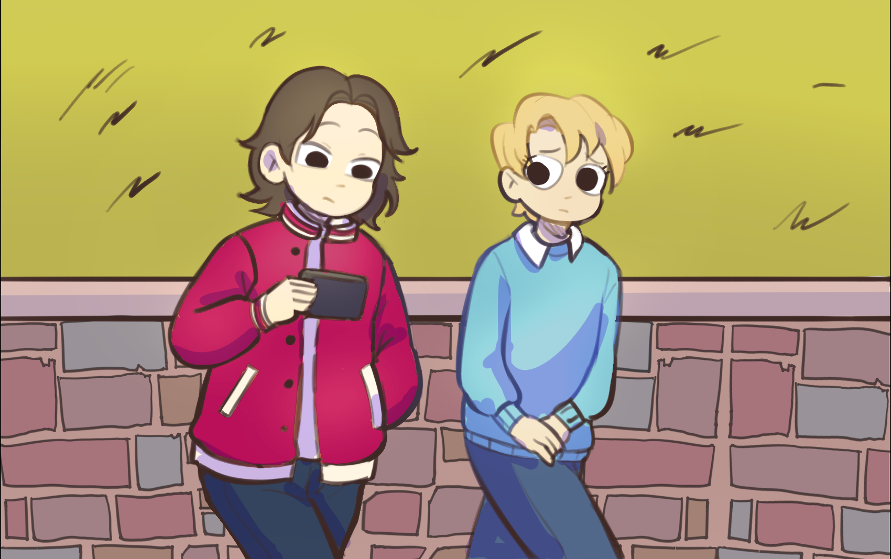
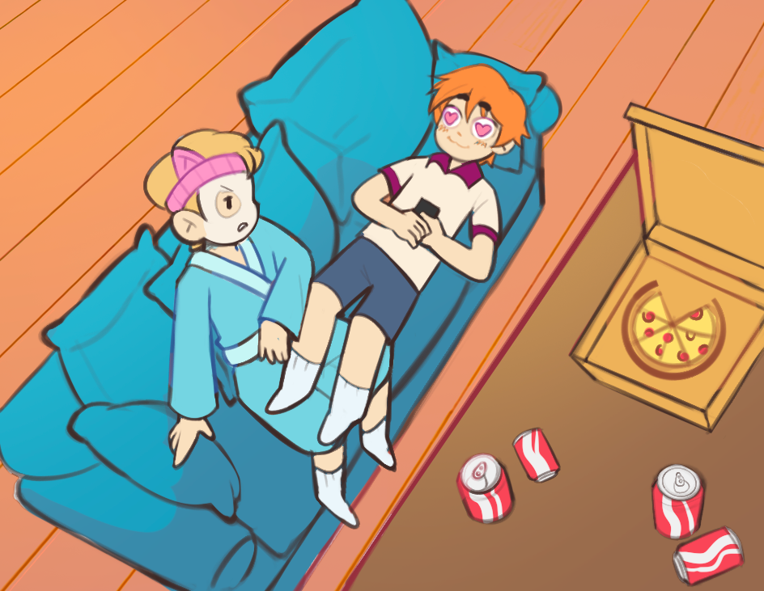
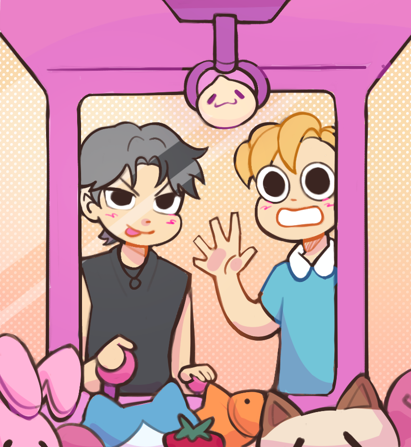
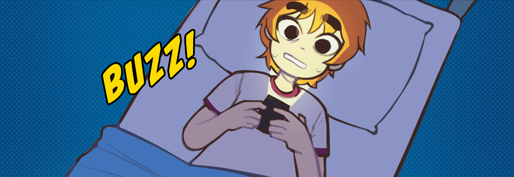
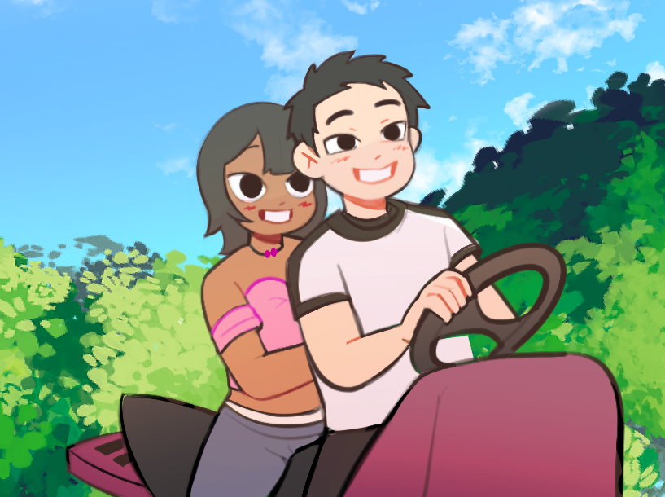

A series of short, one-shot comics featuring our original characters that transform our research insights into engaging, eye-catching visuals. Each comic presents relatable modern-day scenarios — from reimagined cultural expectations in dating, to common challenges in digital romance (such as ghosting). These stories aim to entertain its viewers while also serving as a thoughtful guide for Filipinos who are curious about or currently exploring the world of dating apps.
RAIN
The overthinking softie.
A shy, timid girl who constantly overthinks her words and actions. She hates big changes and prefers a safe, comfortable routine. Empathetic and emotional, she’s soft-spoken but not afraid to voice out her concerns.
Her insecurities and struggles with self-regulation can feel overwhelming, often leading to misunderstandings with her partner.
Visuals: Two space buns, comfy modern clothes, green accents (her favorite color).
FELICITY
The effortlessly cool roommate.
Rain’s extroverted and fashionable roommate. She’s sassy, bold, and a bit nonchalant, perfectly balancing out Rain’s energy.
After several heartbreaks and disappointments, she learned to mask her vulnerability with humor and chill vibes, choosing spontaneity and fun over control.
Visuals: Dark skin, stylish and flirtatious, usually in pink outfits.
DANIEL
The golden retriever romantic.
Outspoken yet soft, Daniel is warm, optimistic, and openly affectionate — the definition of a hopeless romantic.
His sincerity makes him vulnerable to being hurt, but he never fully stops believing in true love.
Visuals: Blue “soft boy” clothes and yellow fluffy hair.
FELIX
The rugged softie in disguise.
Tall and rugged, Felix seems intimidating at first, but he’s just as romantic as Daniel underneath the walls he’s built.
A painful past makes him cautious about opening up, so he tends to show love through actions instead of words.
Visuals: Magenta leather jacket, tall frame, orange messy hair.

CATFISH
The excitement of a first date and finally meeting with someone you clicked with, only to be met with a completely different version from their online persona in real life. Through disappointment, Daniel learns acceptance and peace. Closure comes from truth, not excuses.
Read comic →
FAMILY DINNER
Navigating subtle family pressures, relationships, and settling down through friendship, quiet moments, and honest reflection. They learn that self-trust can be its own kind of love. Wholeness doesn’t wait for approval. It grows from within.
Read comic →
GHOSTED
Friends can heal things that they did not break. A warm, grounding moment between disorganized and secure energy. With Daniel’s safe space and reaffirmation, Felix learns that showing up sincerely feels lighter than overthinking. Vulnerability doesn’t chase people away, it invites the right ones in.
Read comic →
MAKEUP
A heartfelt story about choosing yourself. After the date ends with a hurtful comment, Daniel reflects and realizes his worth isn’t something anyone else gets to define. When validation fades, he discovers that self-love stays.
Read comic →
SAFE SPACE
Comfort shouldn’t feel confusing. Rain struggles with silence and overthinking, but Felicity’s steady presence shows that peace can feel safe, not scary. Healing begins when someone chooses to create a safe space with you. !
Read comic →
SWIPE
A tender look into the mind of someone who wants a connection but fears it, too. Felix scrolls, hesitates, remembers past pain and trauma. It takes courage to reach out. Even one message can be an act of bravery when your heart has been bruised before.
Read comic →
WALK HOME
When a fear of silence is met with a fear of messing up. A soft, emotional look at anxious and avoidant communication. Rain needs reassurance, Felix is afraid of saying the wrong thing, and both learn to meet in the middle. It’s not about who wins, who loses, is right, or is wrong. It’s about finding a way forward together.
Read comic →
UNLABELED
Desiring clarity in a world that avoids it. Felicity, despite her nature, finally thought she found the one. But when they refuses to name the relationship, she chooses herself and later finds real love. Walking away isn’t losing, it can make space for something better.
Read comic →